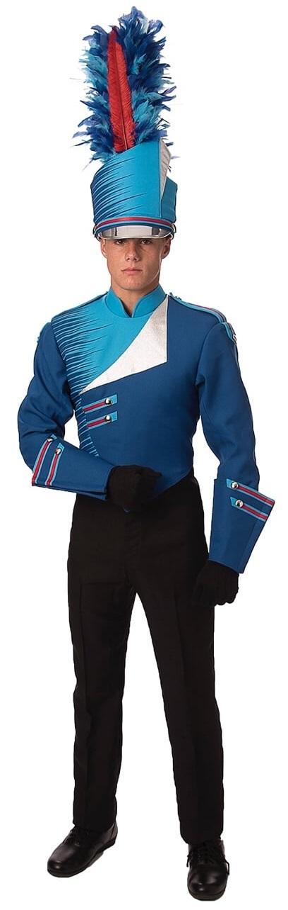
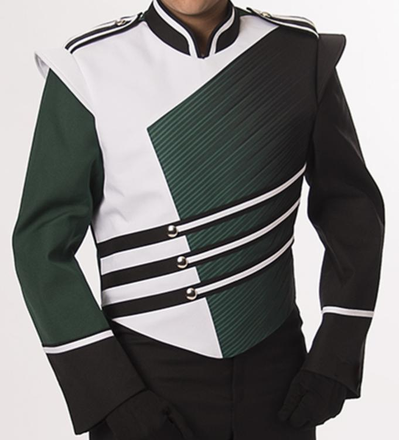
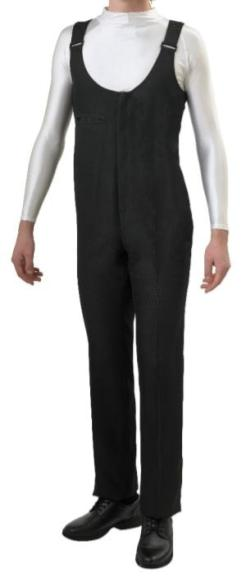
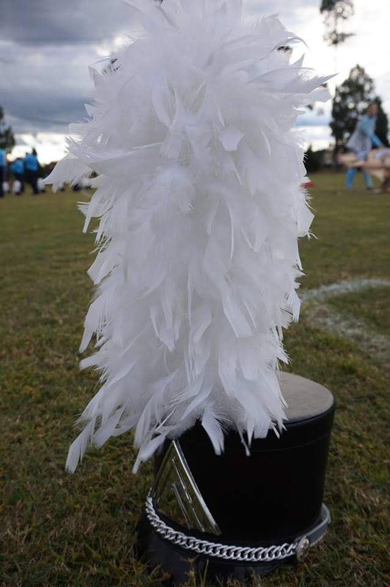
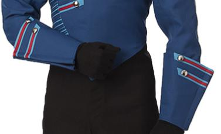

The uniform is what bands wear to look the same during a performance, usually styled in school colors. They usually consist of a jacket, bibbers, shako, and a plume. Some bands will also use gauntlets on the lower arm and some will use an Aussie or helmet instead of a shako. In many bands, the drum major will wear a uniform with different colors, but similar design to stand out from the rest of the band, whether it is the jacket or bibbers.
The jacket is the center point of the uniform, as it is the most heavily styled. Designs range from basic to complex, colors range from few to many and school logos are commonly found on some part of the jacket. Colors and designs are usually what best fit the school and look good.
The cut of the jacket is similar to that of a standard jacket (long sleeves, usually multiple layers), except the zipper, which is usually on the back and the garment usually stays above the waist. Materials usually consist of a polyester mix throughout the jacket with padding on the shoulders and a plastic liner inside the collar (and depending on the design, shoulder "wings," as seen below) to keep its shape.
Between the Jacket and clothing underneath, band members almost always wear bibbers. Bibbers are a type of pants that fit the body in a similar way to overalls but are made of a cotton or polyester material. They rise from the ankle to mid-chest with adjustable straps that go over the shoulders to hold them up.
On the front, there is a zipper that goes from the waist to the lower chest with one or two snap-style buttons on top. Their design is usually a single color, stripe down the side or a basic design, unlike the jacket. Shoes are usually chosen to be a similar color to the bibbers. For example, navy blue or black bibbers usually go with black shoes and white bibbers usually go with white shoes.
In Marching Band, the most common type of headwear is a Shako. The design of a Shako is a cylindrical shape with a visor on the front and a chinstrap to keep it from falling off. Sometimes on the top, the front or back is slightly higher than the rest of the top to add more shape to the Shako. To individualize the Shako, there will either be an emblem on the front or a wrap around the whole Shako to give it a custom, but removable design.
On top of the Shako, there is a feathery ornament called a plume. Plumes are used to add height to the performers (8-16 inches) and style, to top off (pun intended) the style of the uniform. Some plumes have multiple colors of feathers, silver or gold accents or even a whole feather going up the middle. To put the two together, you insert the metal piece on the bottom of the plume into a hole [usually] on the front of the shako. Most members of the band wear this but exceptions include Sousaphone players and Field/Front ensemble.
Gauntlets are a piece of the uniform that is worn on the lower arm, usually from the wrist to mid-forearm, flared out from the arm, away from the body. They usually have a design that is in line with the rest of the jacket, usually featuring the same colors and similar accents to those on the front of the jacket. Gauntlets can also be useful for keeping the end of the performer's gloves in the jacket sleeve.
